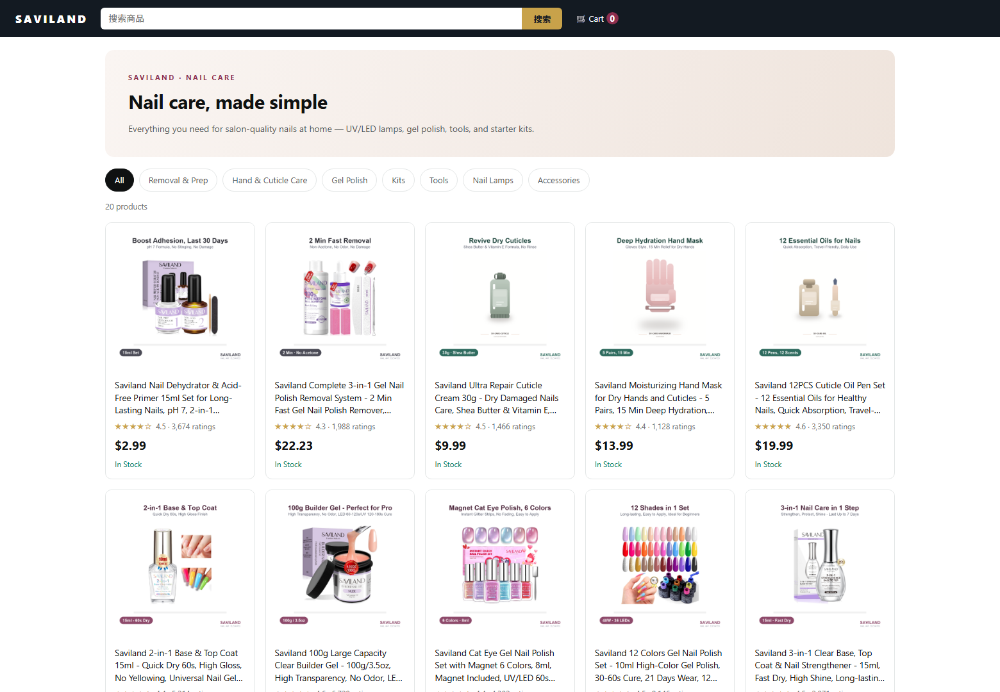
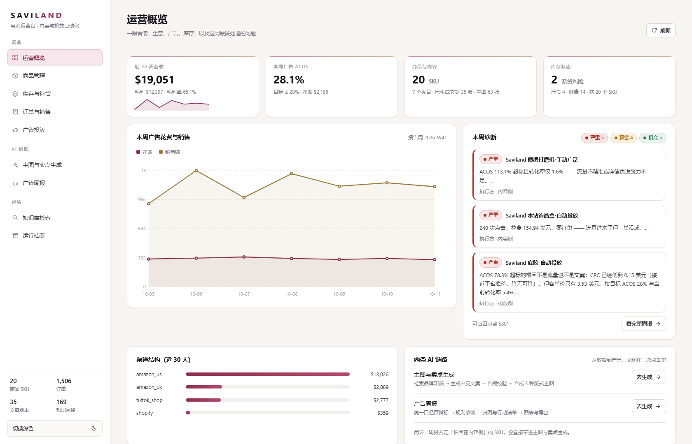
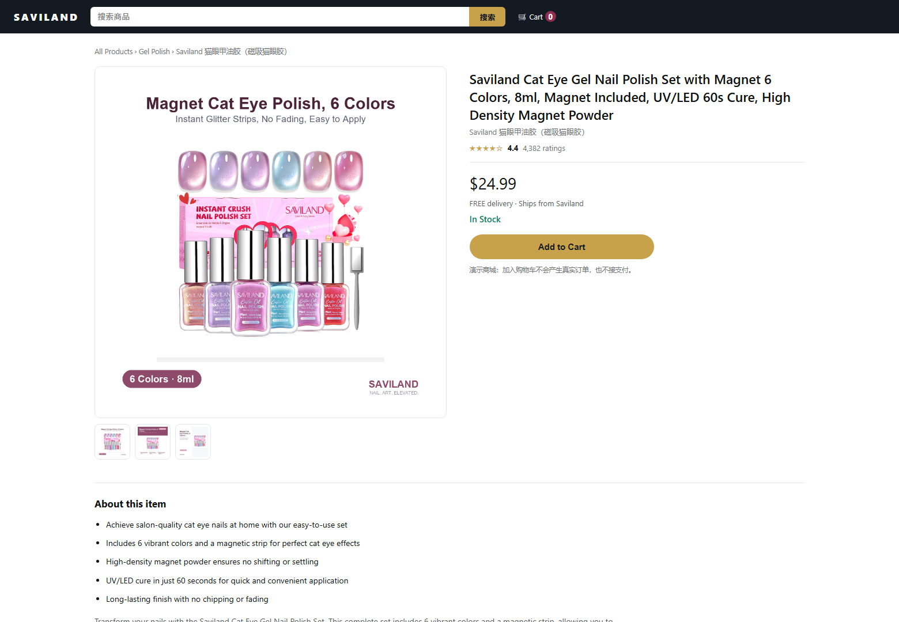
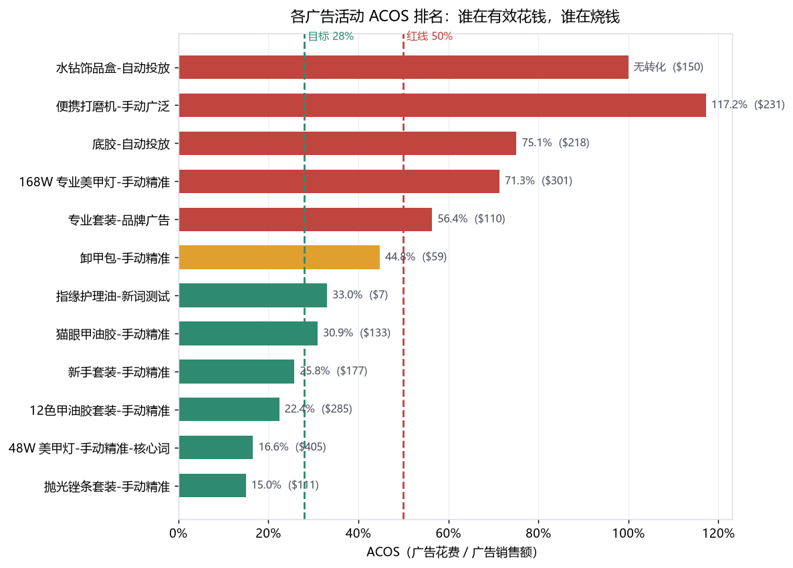
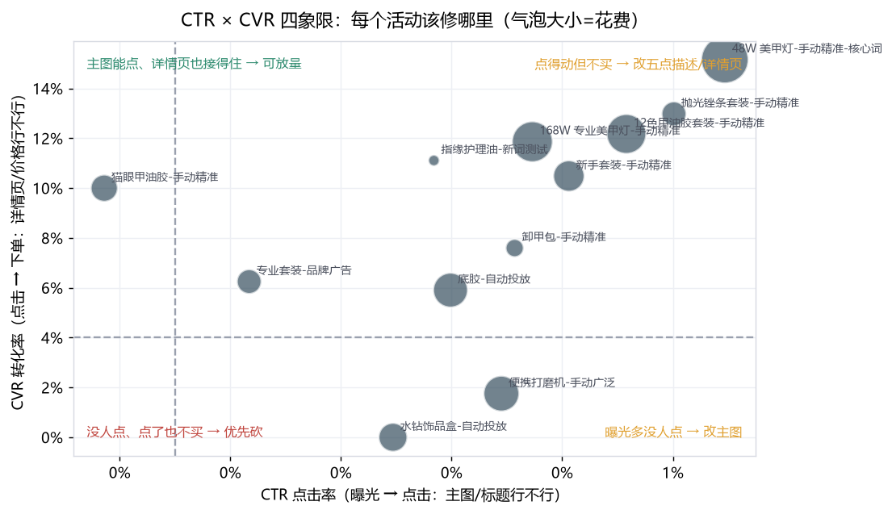
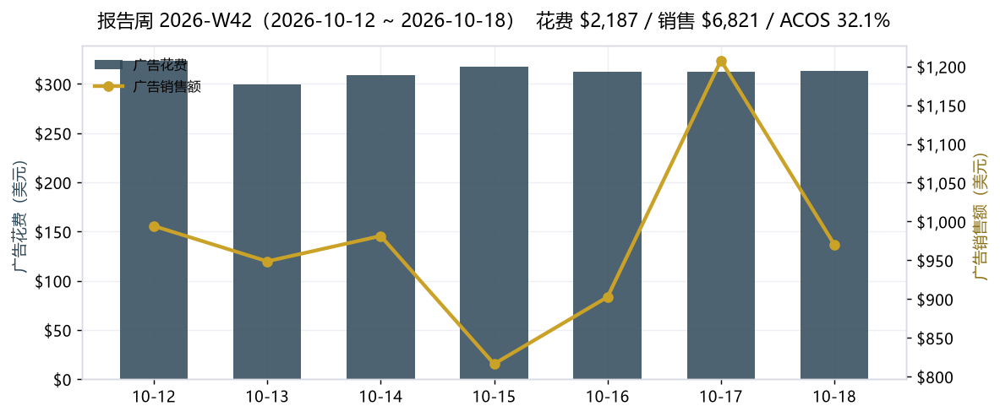
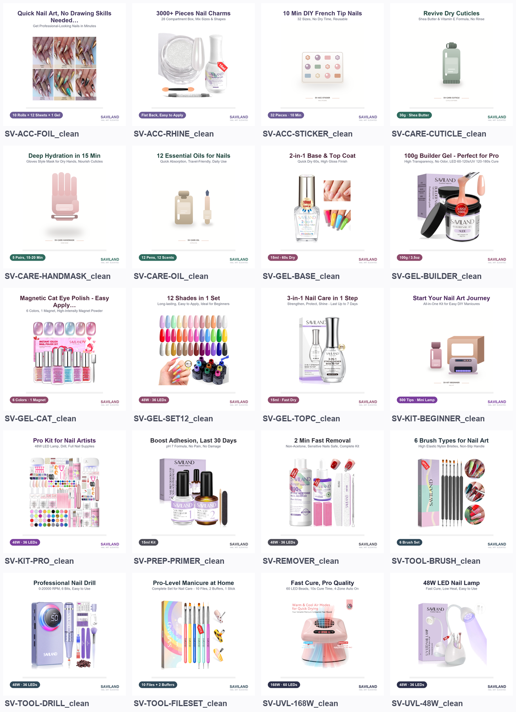
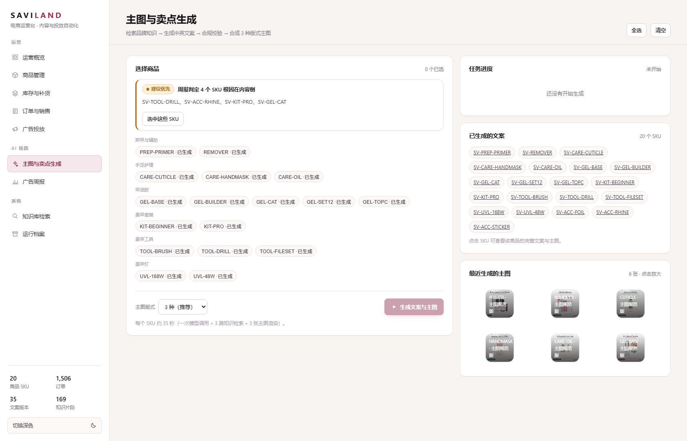
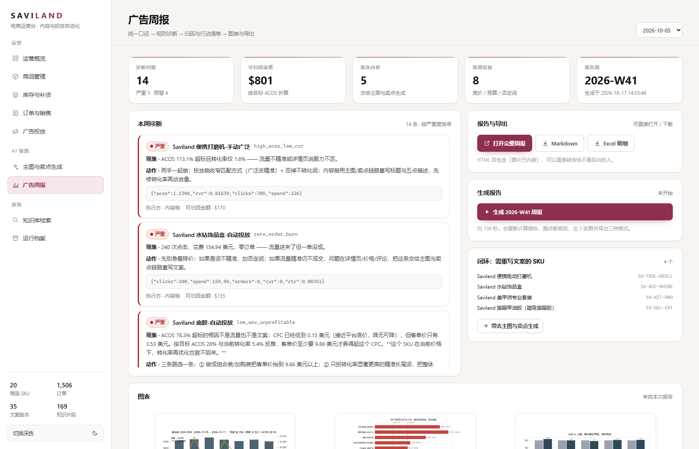

/shop

01 / BUYER STOREFRONT
AI 产出不是一份 PPT，直接变成商品页
链路 1 生成的主图、英文标题、五点描述和后台搜索词，直接渲染到独立买家端。改一次提示词或重跑一次链路，页面内容会真实变化。
- 买家端公开，后台登录；两套应用、两套样式、两套数据边界
- 前台字段白名单投影，看不到成本、毛利、广告和库存明细
- 少量商品图取自公开品牌资料，仅用于非商业案例展示；生成图与来源逐张可追溯
以 Saviland 公开商品与运营场景为研究参考，20 个 SKU。从买家端、后台到 RAG 与广告诊断，整条链路都能跑通、回灌和追溯。
独立非商业作品集 · 在线体验为录屏演示。与 Saviland 无隶属、合作或背书关系； 订单与广告为结构对齐的仿真数据，商品与生成图可以逐张追溯。

从买家端商品页，到后台运营台、内容生成和广告诊断。没有真人操作，所有画面来自实际运行的项目。
如果只看结论：这是一个把 AI 接进电商日常工作流、并且主动划清能力边界的项目。

链路 1 生成的主图、英文标题、五点描述和后台搜索词，直接渲染到独立买家端。改一次提示词或重跑一次链路，页面内容会真实变化。

模型负责写得好听，确定性规则负责不出事。生成结果先过禁用词与夸大表述规则，再进入 Pillow 合成三类主图。
入口层很薄，业务域是纯逻辑，AI 能力可以被替换、降级和追溯。两条链路共用同一套品牌知识、合规规则与运行档案。
示例报告周 2026-W42。金额是快照，口径与结论结构固定；数据保鲜后具体数值可能变化。



周报不是把指标念一遍，而是指出哪个活动在烧钱、证据是什么、下一步交给谁。
规则引擎给出确定性问题，LLM 负责把证据组织成可执行的归因；两者职责分开，失败时也不会互相掩盖。



不是“用了什么框架”，而是遇到问题时怎么拆、怎么验证、哪里主动不做。
模型的优化目标和合规要求天然冲突。标题要更有说服力，就可能写出 #1、guaranteed 这类高风险词。所以让规则做确定性拦截，并用“该拦的必拦 / 不该误杀的不能误杀”双向测试钉住。
“前台不放后台链接”不是安全边界。这里用独立模块、独立样式、字段白名单投影和导入树测试，保证买家端拿不到成本、毛利、广告与库存明细。
没有 API Key 时链路会降级为确定性生成器，产物结构仍然完整，但运行档案会明确标记 degraded。失败、中断、僵尸任务都有记录和清理。
商品与环境来自真实调研；订单与广告数据是结构对齐的仿真数据。规则逻辑可以用 run.py whatif 现场改数验证，但不会把示例金额包装成真实经营结果。